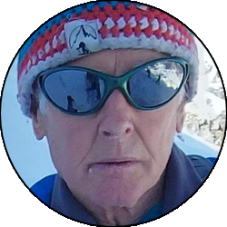

Relazione
| Data Uscita | 09-03-2023, Giovedì | Area | Grigne |
|---|---|---|---|
| Luogo di Partenza | Passo Cainallo - Esino Lario (LC) | Quota |
1300m la partenza 1805m la Bocchetta di Piancaformia 2106m la Cima di Piancaformia 2410m la cima |
| Dislivello | 1200m (circa) | Tempi | 6:00 ore (2:30 ore la cresta) |
| Esposizione | Nord-Ovest | Difficoltà Tecnica | II, 35° neve |
| Punti di Appoggio | Bivacco 89a Brigata Poletti, Rifugio Brioschi, Rifugio Bogani | Acqua | Niente, solo ai rifugi (che potrebbero essere chiusi d'inverno) |
| Partecipanti |
 Giorgio T,
 Oracolo Oracolo
|
||
(clicca sull'immagine per scarica la traccia GPS)
Accesso
Da Lecco prendere la SS36 fino all'uscita di Bellano. Portarsi verso la Valsassina e prima di Taceno prendere per Parlasco, e superato il paese a destra verso il passo di Agueglio. Percorrere tutta la strada con bei panorami sul lago, superando Agueglio ed arrivando a un ulteriore bivio al quale si prende a sinistra per Cainallo. Percorrere la strada fino a dove possibile, solitamente al Passo Cainallo, parcheggio a pagamento (colonnina presso il rifugio Cainallo).
Avvicinamento
Seguire la carrareccia che passa sopra alla pista da sci fino a quando si gira decisamente a sinistra ricollegandosi alla strada percorribile d'estate che porta fino al Vo di Moncodeno. Da qui salire nel bosco e poi proseguire in falsopiano fino al bivio tra Bogani e Bietti, dove si prende a destra per quest'ultima. Seguire ora il filo di cresta che passa dal bivacco 89a Brigata Poletti (chiesetta), poi per un bosco e stando sul versante destro del filo di cresta si traversa (attenzione alla qualità della neve se presente) fino a raggiungere la bocchetta di Piancaformia, dove inizia la cresta vera e propria.
Via
Seguire la cresta inizialmente tra alberelli e roccette, poi via via sempre più aerea fino ad arrivare sotto la cima di Piancaformia. Qua a seconda delle condizioni nevose si può seguire il filo (più impegnativo con poca neve) o star sul lato destro dove passa il sentiero estivo (esposto con tanta neve). Nella parte alta il sentiero torna sul filo che si segue via via con meno difficoltà fino a sbucare sulla Cima di Piancaformia, dove il panorama sulla parte restante dell'itinerario è favoloso.
Scendere qualche metro fino a una forcella, da cui soprattutto con poca neve è consigliabile seguire il sentiero estivo che costeggia tutta la sezione successiva (eventualmente dopo qualche metro un canale permette di tornare in cresta saltando il saltino iniziale). Se si scegliesse di rimanere in cresta su roccia considerare che i punti più impegnativi si possono aggirare sulla destra, su roccia appoggiata ma non solidissima. Ricongiunti alla parte successiva, si prosegue in cresta con difficoltà contenute (massimo qualche saltino), passando rispettivamente prima dalla bocchetta del Guzzi (dove si può scendere sulla Ganda o verso la Bietti, se le condizioni lo permettono) e poi dall'entrata di "W le donne", una delle grotte più famose tra gli speleologi lombardi e non solo. Ancora un tratto di facile cresta e si giunge al bivio dove d'estate il sentiero segnato devia verso la Ganda.

La parte finale, soprattutto in condizioni di neve non buone, è la più impegnativa: qui è facile traversando su neve (occhio ai pendii) ricongiungersi alla parte finale della via della Ganda, che sale il largo canale appena sotto la cappelletta del Rifugio Brioschi. Se invece si percorresse la parte finale rimanere inizialmente sul filo di cresta, per poi superare dei difficili salti stando sul lato sinistro (Nord) della cresta, solitamente la traccia dovrebbe portare di qua se è stata fatta con criterio. Superata una canalina di roccia e ghiaccio che riporta in cresta proseguire sul filo, aereo ma non difficile, passando l'uscita dei vari canali (e delle soste per calarsi nelle grotte a sinistra) fino al pezzo finale, che va solitamente fatto sul versante destro (Ovest) del filo, uscendo a pochi metri dall'ancoraggio finale della catena che porta in cima al Grignone dalla Ganda.
Discesa
Seguire la classica e bellissima via della Ganda verso Nord, solitamente tracciata, se non lo fosse fare attenzione e tenersi sulla sinistra (pali indicatori se non sono coperti da metri di neve) poichè nella parte centrale son presenti diverse grotte e doline anche molto profonde. Arrivati nei pressi della madonnina del Bregai il percorso è meno obbligato e si scende per rado bosco fino al Rifugio Bogani, poi da qui ancora in discesa all'alpe Moncodeno. Da qui scendere traversando poco dopo verso sinistra (indicazioni) facendo attenzione ai canali soprastanti se molto carichi di neve, poi tramite un fastidioso tratto in salita ci si riporta fino al bivio Bogani-Bietti e da lì alla macchina per il percorso seguito all'andata.